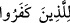
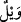

Nihâyet güneş battı.
33. (O zaman:) Onları (atları) tekrar bana getirin, dedi. Bacaklarını ve
boyunlarını sıvazlamaya başladı.
34. Andolsun biz Süleyman’ı imtihan ettik. Tahtının üstüne bir cesed bırakıverdik,
sonra o, yine eski hâline döndü.
35. Süleyman: Rabbim! Beni bağışla; bana, benden sonra kimsenin ulaşamayacağı
bir hükümranlık ver. Şüphesiz sen, dâimâ bağışta bulunansın, dedi.
36. Bunun üzerine biz de, istediği yere onun emriyle kolayca giden rüzgârı onun
emrine verdik.
37. Bina kuran ve dalgıçlık yapan şeytanları da emrine verdik.
38. Demir halkalarla bağlı diğer yaratıkları da onun emrine verdik.
39. “İşte bu bizim bağışımızdır. İster ver, ister (elinde) tut; hesapsızdır” dedik.
40. Doğrusu onun, bizim katımızda büyük bir değeri ve güzel bir yeri vardır.
“Göğü, yeri ve ikisi arasındakileri” yâni mahlûkatı “biz boş yere” hikmetsiz
“yaratmadık.” Aksine, ilim ve amele kaynaklık etsin; âhireti ve âhirette cereyan edecek
hesap, cezâ vb. şeyleri hatırlatsın, diye yarattık. Çünkü dünyada arılık (safv) da keder
de mutlaka bulunacaktır. Ki bunlardan herbiri, âhirette hem rahat hem de tehlikenin
bulunduğunu ortaya koymaktadır. Biz bütün bunları, ayrıca, Allah’ın nuruyla bakabilen
mü’min kullarımız cemâl ve celâl sıfatlarımızın şâhidlerini müşâhede etsinler, diye
yarattık.
Âlem aynadır, şâhidimizin güzelliğine
Müşâhede et zâtını sen de tüm zerrelerde
“Bu,” yâni tüm kâinâtın, eşsiz bir hikmet ve yüce bir gaye taşımaksızın yaratıldığını
“inkâr edenlerin” yâni Mekke kâfirlerinin “zannıdır.” Bunlar her ne kadar herşeyi
yaratanın Allah olduğunu ikrar etseler de bu yaratmanın illeti olan karşılık (cezâ)
fikrinin bâtıl ve boş bir şey olduğuna inanmaları, onların zorunlu olarak âlemin
yaratılışının bâtıl olduğu zannına kapılmalarına ve bu şekilde inanmalarına sebep
olmuştur. Bu kâfirlerin zanları bu şekildeyse, “Vay o inkâr edenlerin ateşteki hâline!”
Onları ateşten hâsıl olan şiddetli bir helâk bulacaktır, o hâlde vâh onların hâline!
(__WORD__) ifâdesi (__WORD__) kelimesinin haberidir. (__WORD__), ta’lîl ifâde eder, yâni kâfirler
hakkında şiddetli helâkin kesinleşmesine, -zan ve inkârlarının götürdüğü- ateşin sebep
olduğunu açıkça ifâde eder. Mânâ şöyledir: Bu zan ve inkârlarından kaynaklanan ateş
sebebiyle vay bu kâfirlerin hallerine!
Öyleyse, en yüce mertebelerde kurtuluş, nimetler ve lezzetlerin kazanılabilmesi için
hakkı hak, bâtılı da bâtıl olarak görmek ve o cezâ gününün zâhirî ve bâtınî azığını daha
şimdiden dünyada iken hazırlamak gerekir.